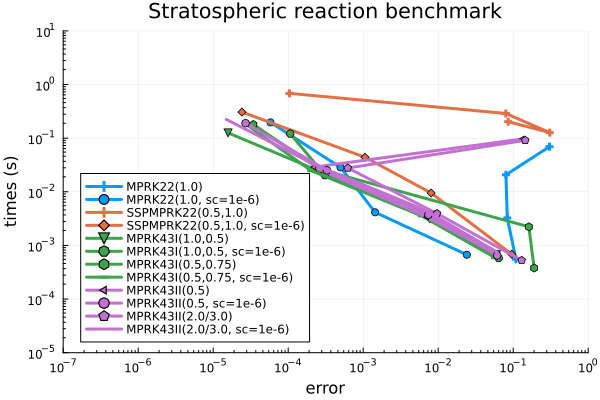
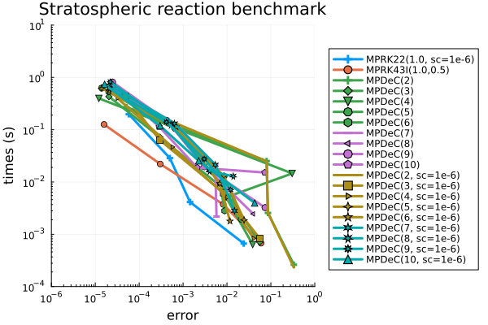
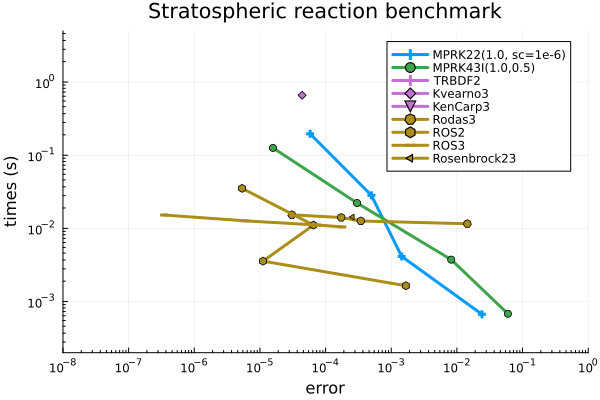
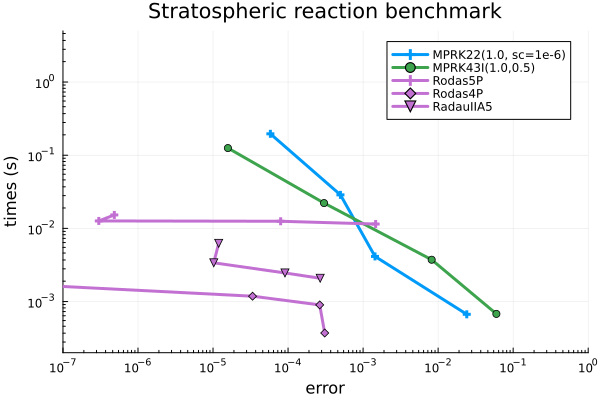
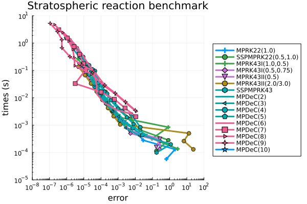
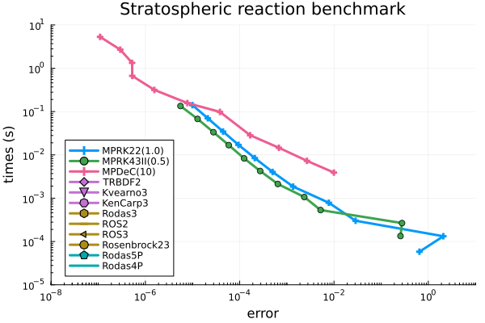

Benchmark: Solution of a stratospheric reaction problem
We use the stiff stratospheric reaction problem prob_pds_stratreac to assess the efficiency of different solvers from OrdinaryDiffEq.jl and PositiveIntegrators.jl.
using OrdinaryDiffEqFIRK, OrdinaryDiffEqRosenbrock, OrdinaryDiffEqSDIRKusing PositiveIntegrators# select problemprob = prob_pds_stratreacTo keep the following code as clear as possible, we define a helper function stratreac_plot that we use for plotting.
using Plotsfunction stratreac_plot(sols, labels = fill("", length(sols)), sol_ref = nothing) if !(sols isa Vector) sols = [sols] end if !(labels isa Vector) labels = [labels] end tspan = prob_pds_stratreac.tspan layout = (3, 2) linewidth = 2 xticks = (range(first(tspan), last(tspan), 4), range(12.0, 84.0, 4)) tickfontsize = 7 xguide = "t [h]" #fill("t [h]", 1, 6) xguidefontsize = 8 yguide = ["O¹ᴰ" "O" "O₃" "O₂" "NO" "NO₂"] ylims = [(-20, 120) (-1e8, 7e8) (2e11, 6e11) (1.69699e16, 1.69705e16) (-2e6, 1.2e7) (1.084e9, 1.098e9)] legend = :outertop legend_column = -1 widen = true if !isnothing(sol_ref) p = plot(ref_sol; layout, linestyle = :dash, label = "Ref.", linewidth) for (sol, label) in zip(sols, labels) plot!(p, sol; xguide, xguidefontsize, xticks, tickfontsize, yguide, legend, legend_column, widen, ylims, linewidth, label, denseplot = false) end else p = plot(sols[1]; layout, xguide, xguidefontsize, xticks, tickfontsize, yguide, legend, legend_column, widen, ylims, linewidth, label = labels[1]) if length(sols) > 1 for (sol, label) in zip(sols[2:end], labels[2:end]) plot!(p, sol; layout, xguide, xguidefontsize, xticks, tickfontsize, yguide, legend, legend_column, widen, label, denseplot = false, linewidth, ylims) end end end return pendFirst, we show approximations of Rosenbrock23() using loose tolerances.
# compute reference solution for plottingref_sol = solve(prob, Rodas4P(); abstol = 1e-12, reltol = 1e-11);# compute solution with low tolerancesabstol = 1e-3reltol = 1e-2sol_Ros23 = solve(prob, Rosenbrock23(); abstol, reltol);# plot solutionstratreac_plot(sol_Ros23, "Ros23", ref_sol)
Although not visible in the plots, the Rosenbrock23 solution contains negative values.
isnonnegative(sol_Ros23)falseNevertheless, OrdinaryDiffEq.jl provides the solver option isoutofdomain, which can be used in combination with isnegative to guarantee nonnegative solutions.
# compute solution with isoutofdomain = isnegativesol_Ros23 = solve(prob, Rosenbrock23(); abstol, reltol, isoutofdomain = isnegative); #reject negative solutions# plot solutionstratreac_plot(sol_Ros23, "Ros23", ref_sol)
For this problem, using adaptive MPRK schemes with loose tolerances will generally lead to poor approximations, particularly regarding the O₂ component.
sol_MPRK = solve(prob, MPRK22(1.0); abstol, reltol);# plot solutionsstratreac_plot(sol_MPRK, "MPRK22(1.0)", ref_sol)
To improve the solution of the MPRK scheme we can inrecase the method's small_constant. Trial and error has shown that small_constant = 1e-6 is a good value for this problem and the given tolerances.
# compute MPRK solution with modified small_constantsol_MPRK = solve(prob, MPRK22(1.0, small_constant = 1e-6); abstol, reltol);# plot solutionstratreac_plot(sol_MPRK, "MPRK22(1.0)", ref_sol)
The remaining poor approximation of the O₂ component could be due to the fact that the MPRK methods do not preserve all linear invariants, as is the case with standard methods like Runge-Kutta or Rosenbrock schemes.
Work-Precision diagrams
In the following we show several work-precision diagrams, which compare different methods with respect to computing times and errors. First we focus on adaptive methods, afterwards we also show results obtained with fixed time step sizes.
Since the stratospheric reaction problem is stiff, we need to use a suited implicit scheme to compute its reference solution.
# select solver to compute reference solutionalg_ref = Rodas4P()The error chosen to compare the performances of different solvers is the relative maximum error at the final time $t = 84$ hours ($t = 302400$ seconds).
# select relative maximum error at the end of the problem's time span.compute_error = rel_max_error_tendAdaptive time stepping
We use the functions work_precision_adaptive and work_precision_adaptive! to compute the data for the diagrams. Furthermore, the following absolute and relative tolerances are used.
abstols = 1.0 ./ 10.0 .^ (2:1:5)reltols = 10.0 .* abstolsWe also note that MPRK schemes with stricter tolerances, quickly require more than a million time steps, which makes these schemes inefficient in such situations.
First we compare different low-order MPRK schemes. In addition to the default version we also use the schemes with small_constant = 1e-6.
# choose methods to comparealgs = [MPRK22(1.0); MPRK22(1.0, small_constant = 1e-6); SSPMPRK22(0.5, 1.0); SSPMPRK22(0.5, 1.0, small_constant = 1e-6); MPRK43I(1.0, 0.5); MPRK43I(1.0, 0.5, small_constant = 1e-6); MPRK43I(0.5, 0.75); MPRK43I(0.5, 0.75, small_constant = 1e-6) MPRK43II(0.5); MPRK43II(0.5, small_constant = 1e-6); MPRK43II(2.0 / 3.0); MPRK43II(2.0 / 3.0, small_constant = 1e-6)]labels = ["MPRK22(1.0)"; "MPRK22(1.0, sc=1e-6)"; "SSPMPRK22(0.5,1.0)"; "SSPMPRK22(0.5,1.0, sc=1e-6)"; "MPRK43I(1.0,0.5)"; "MPRK43I(1.0,0.5, sc=1e-6)"; "MPRK43I(0.5,0.75)"; "MPRK43I(0.5,0.75, sc=1e-6)"; "MPRK43II(0.5)"; "MPRK43II(0.5, sc=1e-6)" "MPRK43II(2.0/3.0)"; "MPRK43II(2.0/3.0, sc=1e-6)"]# compute work-precision datawp = work_precision_adaptive(prob, algs, labels, abstols, reltols, alg_ref; compute_error)# plot work-precision diagramplot(wp, labels; title = "Stratospheric reaction benchmark", legend = :bottomleft, color = permutedims([repeat([1],2)..., repeat([2],2)..., repeat([3],4)..., repeat([4],4)...]), xlims = (10^-7, 10^0), xticks = 10.0 .^ (-7:1:0), ylims = (10^-5, 10^1), yticks = 10.0 .^ (-5:1:1), minorticks = 10)
We see that using small_constant = 1e-6 clearly improves the performance of some methods. Next, we include the MPDeC methods in the comparison and use MPRK22(1.0, small_constant = 1e-6) and MPRK43I(1.0, 0.5) as a reference.
# choose methods to comparealgs = [MPRK22(1.0, small_constant = 1e-6); MPRK43I(1.0, 0.5); MPDeC(2); MPDeC(3); MPDeC(4); MPDeC(5); MPDeC(6); MPDeC(7); MPDeC(8); MPDeC(9); MPDeC(10); MPDeC(2, small_constant = 1e-6); MPDeC(3, small_constant = 1e-6); MPDeC(4, small_constant = 1e-6); MPDeC(5, small_constant = 1e-6); MPDeC(6, small_constant = 1e-6); MPDeC(7, small_constant = 1e-6); MPDeC(8, small_constant = 1e-6); MPDeC(9, small_constant = 1e-6); MPDeC(10, small_constant = 1e-6)]labels = ["MPRK22(1.0, sc=1e-6)"; "MPRK43I(1.0,0.5)"; "MPDeC(2)"; "MPDeC(3)"; "MPDeC(4)"; "MPDeC(5)"; "MPDeC(6)"; "MPDeC(7)"; "MPDeC(8)"; "MPDeC(9)"; "MPDeC(10)"; "MPDeC(2, sc=1e-6)"; "MPDeC(3, sc=1e-6)"; "MPDeC(4, sc=1e-6)"; "MPDeC(5, sc=1e-6)"; "MPDeC(6, sc=1e-6)"; "MPDeC(7, sc=1e-6)"; "MPDeC(8, sc=1e-6)"; "MPDeC(9, sc=1e-6)"; "MPDeC(10, sc=1e-6)"]# compute work-precision datawp = work_precision_adaptive(prob, algs, labels, abstols, reltols, alg_ref; compute_error)# plot work-precision diagramplot(wp, labels; title = "Stratospheric reaction benchmark", legend = :outerright, color = permutedims([1, 2, repeat([3],5)..., repeat([4],4)..., repeat([5],5)..., repeat([6],4)...]), xlims = (10^-6, 10^0), xticks = 10.0 .^ (-6:1:0), ylims = (10^-4, 10^1), yticks = 10.0 .^ (-4:1:1), minorticks = 10)
All MPDeC behave quite similar and no performance benefit of higher-order MPDeC methods is observable. For comparisons with other second- and third-order schemes from OrdinaryDiffEq.jl we choose the second-order scheme MPRK22(1.0, small_constant = 1e-6) and the third-order scheme MPRK43I(1.0, 0.5). To guarantee positive solutions of the OrdinaryDiffEq.jl methods, we select the solver option isoutofdomain = isnegative.
# select reference MPRK methodsalgs1 = [MPRK22(1.0, small_constant = 1e-6); MPRK43I(1.0, 0.5)]labels1 = ["MPRK22(1.0, sc=1e-6)"; "MPRK43I(1.0,0.5)"]# select OrdinaryDiffEq methodsalgs2 = [TRBDF2(); Kvaerno3(); KenCarp3(); Rodas3(); ROS2(); ROS3(); Rosenbrock23()]labels2 = ["TRBDF2"; "Kvearno3"; "KenCarp3"; "Rodas3"; "ROS2"; "ROS3"; "Rosenbrock23"]# compute work-precision datawp = work_precision_adaptive(prob, algs1, labels1, abstols, reltols, alg_ref; compute_error)work_precision_adaptive!(wp, prob, algs2, labels2, abstols, reltols, alg_ref; compute_error, isoutofdomain = isnegative)# plot work-precision diagramplot(wp, [labels1; labels2]; title = "Stratospheric reaction benchmark", legend = :topright, color = permutedims([1, 3, repeat([4], 3)..., repeat([5], 4)...]), xlims = (10^-8, 10^0), xticks = 10.0 .^ (-8:1:0), ylims = (2*10^-4, 5*10^0), yticks = 10.0 .^ (-5:1:0), minorticks = 10)
We see that MPRK methods are advantageous if low accuracy is acceptable.
In addition, we compare MPRK22(1.0, small_constant = 1e-6) and MPRK43I(1.0, 0.5) to some recommended solvers of higher order from OrdinaryDiffEq.jl. Again, to guarantee positive solutions we select the solver option isoutofdomain = isnegative.
# select OrdinaryDiffEq methodsalgs3 = [Rodas5P(); Rodas4P(); RadauIIA5()]labels3 = ["Rodas5P"; "Rodas4P"; "RadauIIA5"]# compute work-precision datawp = work_precision_adaptive(prob, algs1, labels1, abstols, reltols, alg_ref; compute_error)work_precision_adaptive!(wp, prob, algs3, labels3, abstols, reltols, alg_ref; compute_error, isoutofdomain = isnegative)# plot work-precision diagramplot(wp, [labels1; labels3]; title = "Stratospheric reaction benchmark", legend = :topright, color = permutedims([1, 3, repeat([4], 3)...]), xlims = (10^-7, 10^0), xticks = 10.0 .^ (-8:1:0), ylims = (2*10^-4, 5*10^0), yticks = 10.0 .^ (-5:1:0), minorticks = 10)
Again, it can be seen that MPRK methods are only advantageous if low accuracy is acceptable.
Fixed time steps sizes
Here we use fixed time step sizes instead of adaptive time stepping. We use the functions work_precision_fixed and work_precision_fixed! to compute the data for the diagrams. Please note that these functions set error and computing time to Inf, whenever a solution contains negative elements. Consequently, such cases are not visible in the work-precision diagrams.
Within the work-precision diagrams we use the following time step sizes.
# set time step sizesdt0 = 48 * 60 # 48 minutesdts = dt0 ./ 2.0 .^ (0:1:10)In contrast to the adaptive methods, increasing small_constant does not have a positive effect on accuracy, but actually worsens it. To demonstrate this we compare the default version of MPRK22(1.0) to versions with small_constant = 1e-6 and small_constant = 1e-100.
# solve prob with large step sizesol1 = solve(prob, MPRK22(1.0); dt = dt0, adaptive = false)# plot solutionstratreac_plot(sol1, "MPRK22(1.0)", ref_sol)
sol2 = solve(prob, MPRK22(1.0, small_constant = 1e-6); dt = dt0, adaptive = false)stratreac_plot(sol2, "MPRK22(1.0, sc=1e-6)", ref_sol)
sol3 = solve(prob, MPRK22(1.0, small_constant = 1e-100); dt = dt0, adaptive = false)stratreac_plot(sol3, "MPRK22(1.0, sc=1e-100)", ref_sol)
Based on the above comparison, we will only consider schemes in which small_constant is set to the default value in the following.
Furthermore, we only consider schemes that have demonstrated their ability to solve stiff problems in the Numerical Stability Benchmark.
# select schemesalgs = [MPRK22(1.0); MPRK43I(1.0, 0.5); MPRK43I(0.5, 0.75); MPRK43II(0.5); MPRK43II(2.0 / 3.0); SSPMPRK43(); MPDeC(2); MPDeC(3); MPDeC(4); MPDeC(5); MPDeC(6); MPDeC(7); MPDeC(8); MPDeC(9); MPDeC(10)]labels = ["MPRK22(1.0)"; "SSPMPRK22(0.5,1.0)"; "MPRK43I(1.0,0.5)"; "MPRK43I(0.5,0.75)"; "MPRK43II(0.5)"; "MPRK43II(2.0/3.0)"; "SSPMPRK43"; "MPDeC(2)"; "MPDeC(3)"; "MPDeC(4)"; "MPDeC(5)"; "MPDeC(6)"; "MPDeC(7)"; "MPDeC(8)"; "MPDeC(9)"; "MPDeC(10)"]# compute work-precision datawp = work_precision_fixed(prob, algs, labels, dts, alg_ref; compute_error)# plot work-precision diagramplot(wp, labels; title = "Stratospheric reaction benchmark", legend = :outerright, color = permutedims([1, repeat([3],2)..., repeat([4],2)..., 5, repeat([6],5)..., repeat([7],4)...]), xlims = (10^-8, 10^2), xticks = 10.0 .^ (-8:1:2), ylims = (10^-5, 10^1), yticks = 10.0 .^ (-5:1:1), minorticks = 10)
We choose MPRK22(1.0), MPRK43II(0.5) and MPDeC(10) for comparisons with other schemes.
For the chosen time step sizes none of the above used standard schemes provides nonnegative solutions.
# select reference MPRK methodsalgs = [MPRK22(1.0); MPRK43II(0.5); MPDeC(10); TRBDF2(); Kvaerno3(); KenCarp3(); Rodas3(); ROS2(); ROS3(); Rosenbrock23(); Rodas5P(); Rodas4P()]labels = ["MPRK22(1.0)"; "MPRK43II(0.5)"; "MPDeC(10)"; "TRBDF2"; "Kvearno3"; "KenCarp3"; "Rodas3"; "ROS2"; "ROS3"; "Rosenbrock23"; "Rodas5P"; "Rodas4P"]# compute work-precision datawp = work_precision_fixed(prob, algs, labels, dts, alg_ref; compute_error)# plot work-precision diagramplot(wp, labels; title = "Stratospheric reaction benchmark", legend = :bottomleft, color = permutedims([1, 3, 7, repeat([4], 3)..., repeat([5], 4)..., repeat([6], 3)...]), xlims = (10^-8, 10^1), xticks = 10.0 .^ (-8:2:1), ylims = (10^-5, 10^1), yticks = 10.0 .^ (-5:1:1), minorticks = 10)
Package versions
These results were obtained using the following versions.
using InteractiveUtilsversioninfo()println()using PkgPkg.status(["PositiveIntegrators", "StaticArrays", "LinearSolve", "OrdinaryDiffEqFIRK", "OrdinaryDiffEqRosenbrock", "OrdinaryDiffEqSDIRK"], mode = PKGMODE_MANIFEST)Julia Version 1.12.7
Commit 6d172b025e4 (2026-08-15 08:05 UTC)
Build Info:
Official https://julialang.org release
Platform Info:
OS: Linux (x86_64-linux-gnu)
CPU: 4 × INTEL(R) XEON(R) PLATINUM 8573C
WORD_SIZE: 64
LLVM: libLLVM-18.1.7 (ORCJIT, sapphirerapids)
GC: Built with stock GC
Threads: 1 default, 1 interactive, 1 GC (on 4 virtual cores)
Environment:
JULIA_PKG_SERVER_REGISTRY_PREFERENCE = eager
Status `~/work/PositiveIntegrators.jl/PositiveIntegrators.jl/docs/Manifest.toml`
[7ed4a6bd] LinearSolve v5.15.1
[5960d6e9] OrdinaryDiffEqFIRK v2.8.4
[43230ef6] OrdinaryDiffEqRosenbrock v2.7.1
[2d112036] OrdinaryDiffEqSDIRK v2.9.2
[d1b20bf0] PositiveIntegrators v0.2.20-DEV `~/work/PositiveIntegrators.jl/PositiveIntegrators.jl`
[90137ffa] StaticArrays v1.9.19